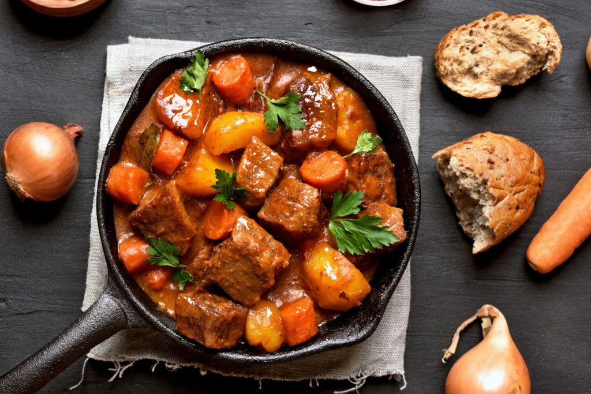

Goulash.
Goulash is het nationale gerecht van Hongarije maar wordt ook ver
daarbuiten gesmaakt. Het is oorspronkelijk een soep maar als je de saus
laat indikken, kan je er een stoofpotje van maken.

Ingrediënten.
- 600g rundsstoofvlees
- 2 uien
- 2 wortelen
- 1 rode paprika
- 250g champignons
- 1 tl paprikapoeder
- 1 el tomatenpuree
- 200 ml rode wijn
- 200 ml groentebouillon
- 400g gepelde tomaten uit blik
- 1 el olijfolie
- bieslook
- peper
- zout
Bereiding.
- Snijd de ui fijn en de champignons in partjes.
- Snijd de wortel en paprika in stukken.
-
Verhit de olijfolie in een stoofpot. Kleur het vlees aan en kruid met
peper, zout en paprikapoeder.
- Voeg de uien, wortels, paprika, champignons toe en fruit glazig.
- Roer de tomatenpuree onder de groenten en blus met rode wijn.
- Giet de bouillon toe en de gepelde tomaten.
- Laat alles 2 uur op een zacht vuurtje sudderen.
- Werk de goulash af met bieslook.
- Lekker met brood.
Homepage